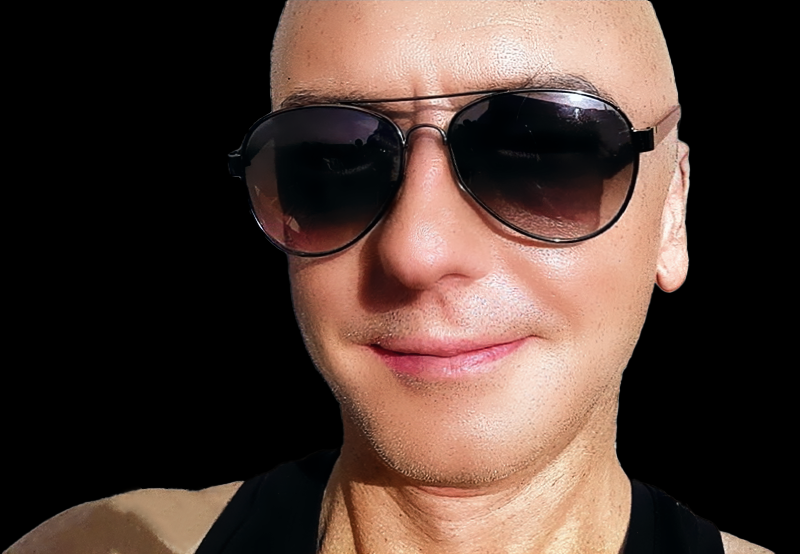

Tim has experience in web development, graphic design, motion graphics, 3d animation, digital marketing, video production, music and audio production. He is also an accomplish amateur chef, musician and lover of physics.
bauhau@proton.me
Tech
JavaScript, HTML, CSS, PHP, Python
Unity, three JS
Wordpress, Shopify, PageFly, Strapi, Elementor, Astro
React, Next JS
MongoDB, MySQL
Design
Photoshop, Illustrator, After Effects, Premiere
Figma, Penpot, Adobe XD
Blender, 3ds max
Cubase 12, Ableton Live
Work History
🚧 DEVELOPER | DESIGNER
2020 - Present
Working on several projects for clients in France, the UK and Switzerland including the development of a community
platform for expat women in France.
- Tiered membership site with subscriptions
- Activecampaign advanced automations and marketing
- Advanced features including group creation, zoom integration, front end blog and event submission..
- Atomic Sunrise Festival - UK
- Website creation
- Email campaigns
- Social Media Marketing
- URNE.CH - Switzerland
- Website optimzation for SEO
- Web design and development
- Content migration and production
🚧 WEB DEVELOPMENT | VIRTUAL EVENTS | PODCASTS
2020-2021
Produced virtual events for ETSI in Sophia Antipolis (France) during Lockdown
- 1000+ attendees (professionals and academics)
- Live streamed Seminars and Tutorials
- Used EventsAir to build and extend functionality
- Created a bespoke Interface and Branding for Events
- Events included IOT Week and Quantum Safe Cryptography
🚧 WEB DEVELOPMENT | 3D VISUALISATION | SOCIAL MEDIA MARKETING
2017-2020
Produced websites for clients on the French Riviera
- Developed strategies for content on Facebook and Instagram
- Created a 3D prototype with composites for a 'container' restaurant
- Developed content strategies (longtail keyword analytics etc)
🚧 WEB DESIGN | CUSTOM CMS
2003-2017
Started a digital agency building websites and marketing for
local businesses. Worked with a custom CMS and later built Wordpress sites with different plug-ins or using Dreamweaver.
- Design and 3D Visualisation work for a variety of clients
- Motion Graphics and Idents for early YouTube Channels
- Live streaming and Virtual Communities
🚧 CREATIVE DIRECTOR / DEVELOPMENT EXECUTIVE | BBC
1998-2003
Worked on several large scale projects including BBC Body, Evowarriors (see Addendum at end of Resume) and on commercial productions and web design for several clients - internal and external.
- Protoype visualisation
- Developed Rapid Prototype Design methodology
- Built relationships inside and outside the organisation, including partnerships with MIT Media Lab and the University of Washington
🚧 DESIGN LEAD | CAMBRIDGE UNIVERSITY, ENGLAND
2002
Worked with CARET [Cambridge Advanced Research into Education Technologies] to produce innovative educational projects including a 3d visualization of the extinct Dodo - working with a team from the ZOOLOGY Department.
- Protoype visualisations
- Developed 3D Point Cloud of Dodo from actual specimen
🚧 VIRTUAL NIGHTCLUB | TRIPMEDIA, LONDON
1996 - 1998
VNC was one of the worlds first interactive games with a strong storyline. It also featured music from several contemporary labels and from Jazz masters including Herbie Hancock
- Maintained Asset tracking
- Audio loop and music creation
- 3D Environoment modelling in Softimage
- Video editing in Premiere and motion graphics work in After Effects
- Bug testing and tracking, laison between technical and creative teams
🚧 VIRTUAL NIGHTCLUB | TRIPMEDIA, LONDON
1987 - 1998
Worked as a drummer and percussionist with several bands and artists
- Studio tracking in London with Progressive Rock Band Winter
- Live Touring - London, Ireland, Amsterdam
- Played with NYJO - London
- Studied Drumming / Hand Technique / Moeller Technique with the great Bob Armstrong
- Played in several local and college bands